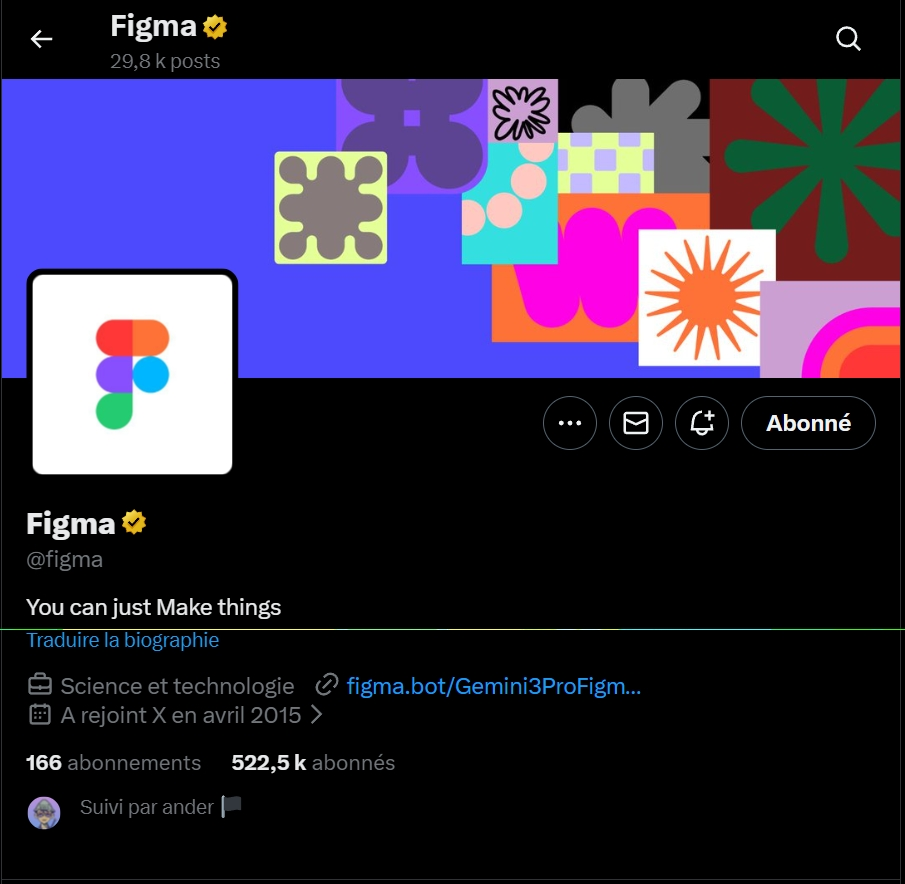
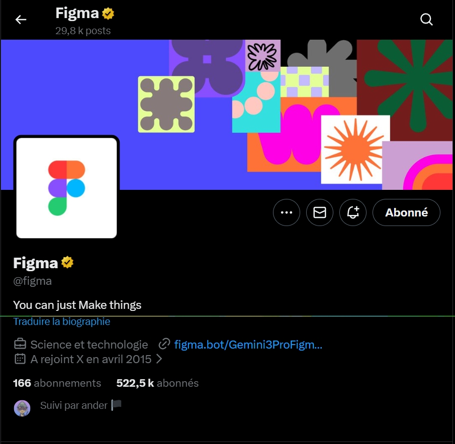

Ma veille technologique
Qu'est ce qu'une veille technologique?
La veille technologique consiste à surveiller et analyser les nouveautés et évolutions dans un domaine afin de rester informé, d’améliorer ses compétences et d’anticiper les changements. Elle repose sur l’utilisation de différentes sources d’information, comme les blogs, newsletters, réseaux professionnels ou forums spécialisés, et permet de découvrir de nouveaux outils et bonnes pratiques.
Comment faire sa veille ?
Pour réaliser une veille technologique efficace, on peut combiner deux approches complémentaires. La veille pull consiste à aller chercher l’information soi-même en consultant des blogs, tutoriels, forums ou chaînes spécialisées afin d’approfondir des sujets précis. La veille push, quant à elle, permet de recevoir automatiquement les nouveautés grâce aux newsletters, alertes, flux RSS ou comptes de réseaux sociaux d’experts. En combinant ces deux méthodes, on peut à la fois être informé en temps réel des nouveautés et approfondir les sujets qui nous intéressent le plus, ce qui rend la veille plus complète et efficace.
Ma veille technologique
Pour ma veille technologique sur Figma et l'UX/UI, j’ai appliqué à la fois les méthodes pull et push. Pour la veille pull, je consulte régulièrement des blogs spécialisés en UX/UI, des tutoriels sur YouTube et la Figma Community afin de découvrir de nouvelles fonctionnalités, des plugins et des bonnes pratiques de design. Pour la veille push, je me suis abonnée à la newsletter officielle de Figma, je suis les comptes Twitter et LinkedIn liés à Figma et j’utilise un flux RSS pour recevoir automatiquement les articles, tutoriels et annonces de nouveautés. Ces sources me permettent de rester informée en temps réel tout en approfondissant les sujets qui m’intéressent. En combinant ces deux approches, je peux améliorer mes compétences et optimiser mes projets sur Figma de manière efficace.).


 
